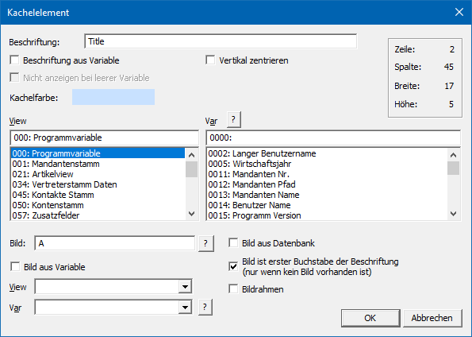

Ø Kachelelement
Mit der Funktion "Kachelelement" kann der Inhalt einer Variable als Kachel ausgegeben werden.
Hinweis
Eine Kachel besteht aus einem Bild und einer darunterliegenden Beschreibung.
Eigenschaftsfenster "Kachelelement"

Ø Beschriftung
An dieser Stelle kann eine Beschriftung für die Kachel hinterlegt werden.
Ø Beschriftung aus Variable
Durch Aktivierung dieser Option wird die Beschriftung der Kachel nicht mehr aus dem Feld "Beschriftung" genommen, sondern dynamisch, aufgrund der zugeordneten Variable, ermittelt und ausgegeben.
Ø Vertikal zentrieren
Mit Hilfe dieser Option wird die Beschriftung vertikal zentriert in der Kachel ausgerichtet.
Ø Nicht anzeigen bei leerer Variable
Wenn die Beschriftung des Kachelelements aus einer Variable stammen soll, dann steht die Option "Nicht anzeigen bei leerer Variable" zur Verfügung. Wird diese aktiviert, so wird die Kachel nicht ausgegeben, wenn die verwendete Variable leer ist.
Ø Kachelfarbe
An dieser Stelle kann die Farbe der Kachel gewählt werden.
Ø View / Var (Beschriftung / DrillDown)
Über die Auswahllisten können die View (d.h. die SQL-Tabelle)
und die Variable (d.h. die SQL-Spalte in einer Tabelle) bestimmt werden, welche
ausgegeben werden soll. Mit Hilfe des Icons  kann das Fenster "Variable suchen"
geöffnet werden. In diesem ist es möglich per Volltextsuche nach Variablen zu
suchen.
kann das Fenster "Variable suchen"
geöffnet werden. In diesem ist es möglich per Volltextsuche nach Variablen zu
suchen.
Hinweis
Weiterführende Information zum Einfügen von Variablen sind dem Kapitel Einfügen von Variablen zu entnehmen.
Ø Bild
Im Eingabefeld "Bild" kann die Datenquelle der Grafik angeben werden, welche in die Kachel eingebunden werden soll. Falls der Dateiname nicht bekannt ist, kann - analog dem Matchcode der WinLine Programme - mit einem Klick auf das Fragezeichen nach der Grafik gesucht werden. Es empfiehlt sich, alle eingebundenen Grafiken in einem zentralen Verzeichnis (z.B. am Server) zu speichern oder in den Systemtabellen der WinLine zu verwalten.
Hinweis
Mit Hilfe der Option "Bild aus Datenbank" wird gesteuert, ob
das Bild in einem Windows-Verzeichnis liegt oder sich in der
WinLine-Systemdatenbank befindet. Dementsprechend wird auch der Matchcode per
Icon dargestellt.
Ø Datei-Typen
Wenn durch Anklicken des Icons nach einer Grafikdatei gesucht wird,
stehen folgende Dateitypen zur Verfügung, welche WinLine unterstützt und drucken
kann.
ü Windows Bitmap (BMP, DIB)
ü Windows Meta File (WMF, EMF)
ü Graphics Interchange Forma (GIF)
ü Tagged Image File Format (TIF)
ü Truevision Targa (TGA)
ü JPEG File Format (JPG)
ü Zsoft Paintbrush (PCX)
ü Portable Network Graphic (PNG)
Ø Bild aus Datenbank
In der WinLine gibt es die Möglichkeit die Grafikdateien zentral in der SQL-Datenbank (Systemdatenbank) abzulegen (nähere Informationen dazu entnehmen Sie bitte dem WinLine START-Handbuch, Kapitel "Grafiken importieren"). Mit dieser Option wird festgelegt, dass die anzudruckende Grafik eben aus dieser Datenbank gedruckt wird.
Ø Bild aus Variable
Diese Option erlaubt den Einbau variabler Grafiken. D.h. es wird nur die Variable (über den Bereich "View / Var) angegeben, in welcher der Name der Grafik enthalten ist (z.B. Grafikdatei aus dem Artikelstamm oder Grafikdatei aus dem Mandantenstamm). Abhängig vom verwendeten Datensatz wird dann immer die dazugehörige Grafik geladen.
Ø Bild ist der erste Buchstabe der Beschriftung (nur wenn kein Bild vorhanden ist)
Mit Hilfe dieser Option wird das Bild aufgrund des ersten Buchstabens der Beschriftung gebildet.
Ø Mit Rahmen
Durch Aktivieren dieser Option wird ein Rahmen um das Bild gezeichnet.
Ø View / Var (Bild)
Über die Auswahllisten (Option "Bildname aus Variable" muss
aktiviert sein) kann die View (d.h. die SQL-Tabelle) und die Variable (d.h. die
SQL-Spalte in einer Tabelle) bestimmt werden, in welcher sich der Bildverweis
befindet. Mit Hilfe des Icons kann
das Fenster "Variable suchen" geöffnet werden. In diesem ist es möglich per
Volltextsuche nach Variablen zu suchen.
Hinweis
Weitere Information entnehmen Sie bitte dem Kapitel Einfügen von Variablen.